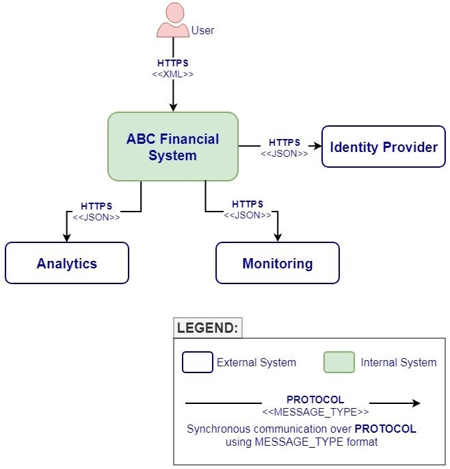
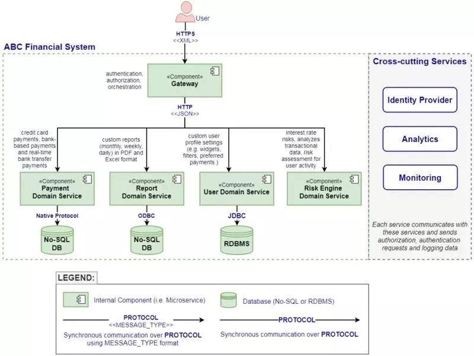

为什么说我们需要软件架构图？
通过创建和维护架构图来提供准确且有价值的内容并非易事。大多数情况下，我们要么创建了太多的文档，要么太少，或者不相关，因为我们没能准确地定位文档的受益人及其实际的需求。
我们常犯的最大的一个错误是为系统中具有高波动性的部分创建详细的架构图。除非是自动生成的，否则手动维护它们对我们来说就是一种负担。
在实践中，大多数利益相关者对详细架构图不感兴趣，但会对一两个反映系统模块和边界的高级架构图感兴趣。除此之外，要深入理解系统，代码才是事实的来源，但在大多数情况下，只有开发人员会对代码感兴趣。
为了创建具备一定质量的架构图，可以进行头脑风暴，并与团队就什么对他们来说才是真正有用的东西上达成一致。不要尝试为源代码中不言自明的东西或为了迎合架构方法而创建架构图。
架构图的主要目的应该是促进协作、增强沟通、提供愿景和指导。
在墙上绘制一两个高级架构图并在会议（站会等）期间使用它们。作为一名架构师，你应该让它们可见，变得有价值，并作为项目文化的一部分。不要将它们隐藏起来或放在利益相关者不易接触到的地方。
我们尝试通过创建架构图（作为技术文档的一部分）来反映应用程序的内部状态，但大多数时候我们都没能做对。由此产生的架构图可能非常全面，也可能非常模糊。有时，架构图根本就是不相关的。我之前写过一些关于如何创建有用架构图 (https://www.infoq.com/articles/crafting-architectural-diagrams) 的技巧。
即使创建了相关的架构图，我们也很少更新它们，作为持续开发过程的一部分。实际上，我们只是时不时地更新文档，可能是在某些 sprint 期间（当有时间更新文档时）或在发布特定版本之前。另一方面，大多数开发人员（参加我的软件架构课程的同事或学生）不赞成创建和维护技术文档，他们认为这些任务乏味、耗时，而且价值不如其他任务，他们甚至认为如果源代码写得足够好，文档不是必需的。虽然总会有例外，但我很确定，在架构图方面，对于大多数项目来说几乎都是一样的。
首先，最重要的是 要了解谁是架构图和技术文档的真正受益者。文档的数量和质量应该反映出利益相关者的需求，因为只有这样，我们才能创建准确且恰到好处的文档。
主要受益者应该是直接参与项目的团队（开发人员、测试工程师、业务分析师、DevOps 工程师，等等）。根据我的经验，在团队之外，很少有利益相关者真正关心文档。在最好的情况下，他们可能对一两个高级架构图（例如上下文图、应用程序或软件组件图）感兴趣，这些图粗略地描述了系统的结构并提供了高层次的系统视图。
但是，在大多数情况下，我们并没有确定真正的受益者及其真正的需求，直接就创建了过多的文档。这些文档很快就会成为维护负担，并且很快就会过时。而在其他一些情况下，我们直接省略了架构图，因为没有时间，或者没有兴趣，或者没有人愿意接受这个任务。除此之外，敏捷宣言宣称，团队应该更加重视软件本身而不是文档，也就是不鼓励繁琐的文档处理过程。
为了找到恰当的文档级别平衡点，可以尝试在团队中这么做：
询问每个同事，他们需要文档为他们提供怎样的内容，以及应该包含哪些类型的架构图。收集他们的意见，然后进行集体讨论，并就团队真正需要哪些的东西达成一致。团队之外可能会有一两个有影响力的利益相关者，他们会提出额外的需求，架构师也有责任将这些人的需求考虑在内。在这个基础上，创建适当数量和质量的技术文档，以满足利益相关者的需求。如果开发人员能够了解文档的真正价值，并对其剩余的价值感兴趣，可以让他们参与更新和维护文档。最后，每个人都会变得很愉快。但是，如果他们不了解文档的必要性或者他们根本不在乎，你几乎可以忽略它，因为很难由一个人（架构师）来维护文档，这应该是团队成员的共同责任。
过去，在瀑布式项目中，因为采用了综合性的企业架构方法（我故意不说出是哪些方法），或者是一些象牙塔架构师提出的要求，我们创建了太多的文档。当软件项目开始大规模拥抱敏捷方法时，一个常见的误解是人们认为他们不需要文档，因为软件比文档更重要。当然，这是两个极端的情况。并不存在什么精确的方法或科学的过程来明确地指定项目需要多少文档才是恰当的。所有当前的软件架构方法都是纯建议或指南。过去遵循的那些综合性的架构过程在现今的项目中被大大简化，甚至已经不存在了。这并不意味着我们应该创建更少的文档，或者根本不创建文档，而是应该专注于创建具备真正价值的文档，同时不妨碍团队的进展。除此之外，并不是所有的文档都会提供价值。但这并不等同于 “所有的文档都没有价值”。此外，因为不同的环境（如经济、政治等）、业务目标和利益相关者等因素，对一个项目有意义的文档对于另一个项目来说可能并没有那么有用。
在这些情况下，很难得出这个问题的正确答案：多少文档（即架构图）才算是适当的？最后，它关系到每个项目和架构师的经验，可以说是 “视情况而定”。适当的能够提供价值的文档数量取决于团队需要什么。我的建议是与团队一起决定需要创建多少技术文档，无论这对团队来说意味着什么。如果文档对你的项目来说毫无意义（为什么会这样？），这也是可以接受的。将团队做出的决定记录下来，让所有利益相关者都知晓。如果有两三个架构图是有用的，那么请确保随时更新它们，保持它们的一致性，并且总是能反映系统的状态。不要专注于任何不会带来价值的事情。
一般而言，架构图和文档应该主要用于团队内部和团队之间的协作、沟通、愿景和指导。它们还应该包含项目的重要设计决策（在某个特定时刻采取）。
架构图应该帮助每个人看到大局，了解周围的环境。在我看来，这应该是创建和维护架构图背后的根本原因。
例如，上下文架构图完全满足了这种需求，并提供了关于系统边界的大量细节，从而可以看到全局。它有助于团队在不同的利益相关者之间达成共识，并简化沟通。我参加了很多会议，当大屏幕上出现这样的上下文架构图时，省去了很多问题，并消除了关于高级系统架构的不确定性。
不过，我们经常会尝试创建综合性的文档来反映系统的内部状态，它们可以是状态图、活动图、类图、实体图、并发图等形式。但这些很快就会过时，除非它们是基于源代码通过一些 “神奇” 的工具自动生成的。
如果人们不需要它们，那么创建这些详细的架构图有什么意义呢？业务利益相关者的抽象图绰绰有余了。在大多数情况下，对于开发人员来说，源代码（即单一事实来源）才是他们真正需要的。因此，请停止为代码中自解释的内容创建详细的架构图，或者当没有真正受众时。
因此，创建有意义的小型架构图，并将它们加到技术文档中。对于大多数应用程序，可能需要两三种架构图。最常见的是上下文图、组件图、系统图或部署图。
在我的项目中，我主要使用两种类型的架构图：


请将这些图视为简单的示例，主要作为每种图应该提供哪些合理信息的指导。图中的信息应该与相应的抽象级别相关，还必须满足利益相关者的需求。
在实践中，你可能倾向于向图中添加越来越多的细节，但是如果它们对利益相关者没有真正的用处，就会导致额外的噪音，增加维护成本，而且容易过时。这些图中的一些细节，例如协议和数据格式，可能对技术利益相关者来说比较方便，因为它们是必要的实现细节。然而，正如之前所述，并不存在精确的方法来确定图中包含多少数量的细节才算是恰当的，这完全取决于不同的项目。不过，架构师需要知道对利益相关者来说真正有用的是什么，并创建和维护架构图来正确地反映这一点。
除了这些架构图之外的任何额外细节，我可以在源代码中找到，或者通过某些工具自动生成（例如运行时视图、开发视图、系统或基础设施视图等）。
我还在会议室中绘制软件架构图（包括所有应用程序组件）。在我们的站会和其他会议期间，人们边指着墙上的这些架构图边谈论他们的任务、状态和遇到的问题。这样，每个团队成员，从产品所有者到开发人员，都能理解系统的全局，并预见到整体障碍和其他集成挑战。除此之外，在 Sprint 期间，它还为整个团队提供了更准确的进度状态，尤其是在分布式架构中，且人与人之间存在依赖关系时。
我建议你也在团队中这么做。通过使用足够的架构图继续加强协作、沟通、愿景和指导，否则就不要创建它们，特别是如果团队不使用它们的话。在大多数情况下，手动创建和维护架构图，以此来反映代码行为纯粹是在浪费时间。如果你这样做了，随着源代码的演变，你可能会想要添加越来越多这样的架构图，这是一个危险的陷阱。与其创建大量令人精疲力尽的架构图，不如坚持使用两到三个从不同抽象层次描述系统的架构图，这对于团队来说是非常必要的。经常性地更新它们，如果这个任务不包含太多的细节，并且是团队文化的一部分，那么它将变得更容易。
另外，请记住，团队应该是架构图的主要受益者。如果它们没有表现出任何兴趣，那么你应该停止创建它们，因为这可能是在浪费时间。我们不应该只是 “为了拥有它们”，或者为了遵循综合性的架构方法，或者纯粹为了证明我们作为架构师的角色而去创建架构图。
关于作者
Ionut Balosin 是 Luxoft 的软件架构师，在各种商业应用程序方面拥有超过 10 年的经验，热衷于性能和调优以及软件架构。他经常在各种技术大会上发表演讲，是一个技术培训师。
查看英文原文：
Copyright © 2015 Powered by MWeb, Theme used GitHub CSS.